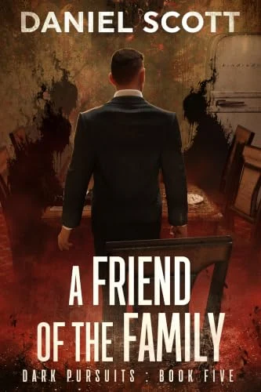
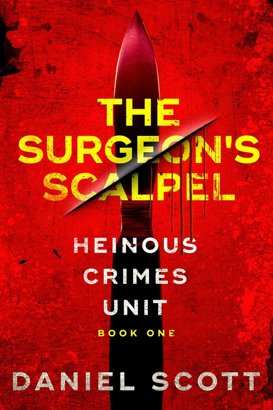
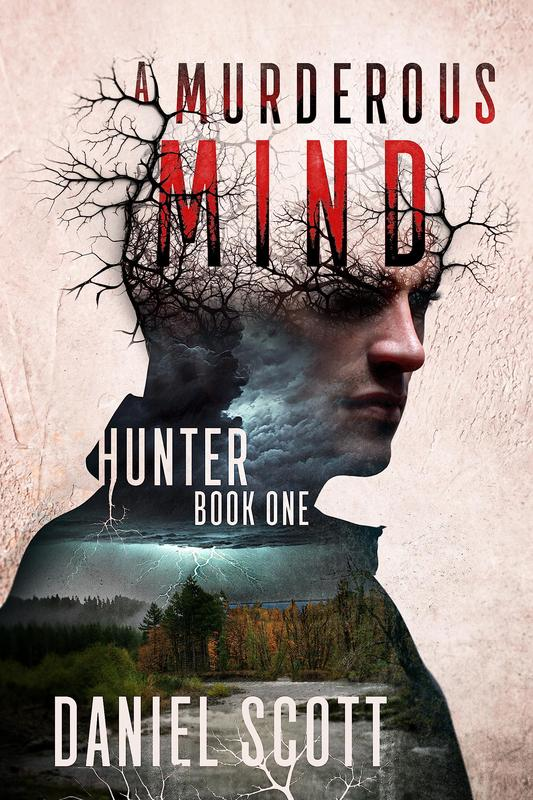
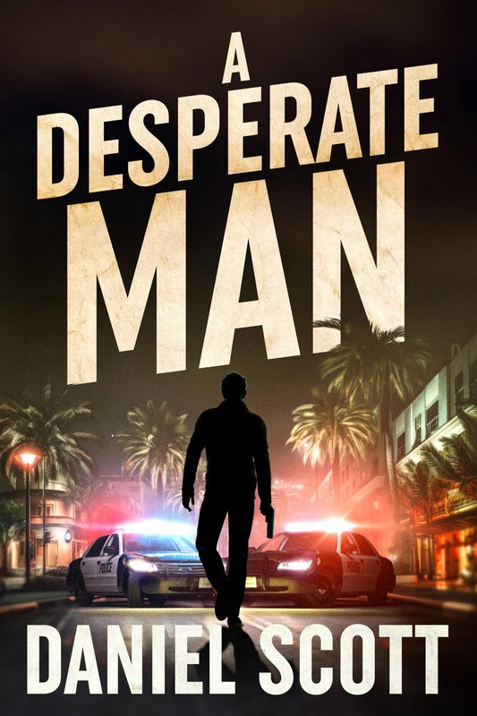
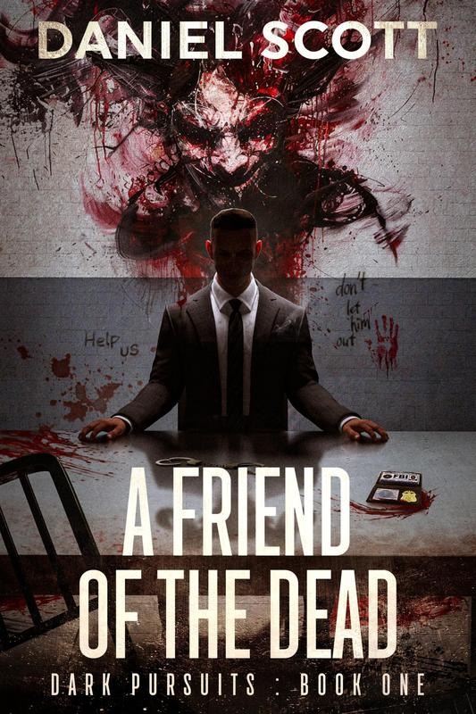

New release · Case DP-05

Dark Pursuits · Book Five · Out now
A Friend of the Family
Some monsters force their way inside. This one waits to be welcomed.
FBI crime · psychological suspense · supernatural dread
Daniel Scott writes dark, compulsive thrillers about brilliant investigators, patient monsters, old debts, and the moment a case stops being professional.
Follow Daniel on AmazonNew release · Case DP-05

Dark Pursuits · Book Five · Out now
Some monsters force their way inside. This one waits to be welcomed.
“Crazy and unputdownable!” — reader review
Reader intake
Four separate series. Four clean entry points. Choose the kind of trouble you want tonight.

FBI procedural · 9 books
Ritual killers, an autistic FBI genius, and a brilliant enemy who keeps turning every investigation personal.
Best for Criminal Minds, Hannibal, long-running case mythology
Start The Surgeon’s Scalpel
Psychological suspense · 3 books
Killer-POV suspense with the door locked from the inside and the pressure rising on every page.
Best for intimate menace, obsession, unreliable minds
Start Hunter
FBI manhunt · 3 books
A brilliant escaped predator. One FBI agent standing between him and everyone she loves.
Best for cat-and-mouse tension, escalating pursuit, personal stakes
Start the manhunt
Supernatural thriller · 5 books
Dead voices, bloodline debts, and supernatural horror moving at modern thriller speed.
Best for occult dread, haunted families, the dead refusing to leave
Start A Friend of the DeadThe long case
The Heinous Crimes Unit is the catalog’s deepest rabbit hole: Christian Windsor, Luke Titan, and a procession of killers whose crimes are designed to be read like messages.
Complete reading order
Each series is separate. Inside a series, start at book one and keep the lights on.
Christian Windsor and the Heinous Crimes Unit investigate predators who treat murder like a language.
John Hilt looks ordinary until the voice inside gets hungry.
Get both trilogies in the Murderous and Desperate boxed setMatthew Brand was supposed to be locked away. FBI Agent Allison Moore knows better.
Get both trilogies in the Murderous and Desperate boxed setAbel Ease tried hiding from the dead. The dead did not accept his resignation.
Reader updates · Case File 000
Get new releases, series updates, box-set alerts, and the occasional dispatch from the part of the house nobody should have opened.
No daily nonsense. Unsubscribe whenever you want.About Daniel Scott
Daniel Scott writes for readers who want stories that move fast, hit hard, and leave a bruise. The books move from FBI serial-killer investigations to psychological descent, escaped-monster manhunts, and haunted-family suspense.
The connective tissue is simple: dangerous people, damaged heroes, old sins, and the suspicion that solving the case may not be the same thing as surviving it.
Reader mail
Book questions, reader notes, and unsettling theories about the dead being terrible communicators are all welcome.